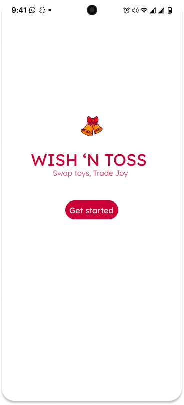
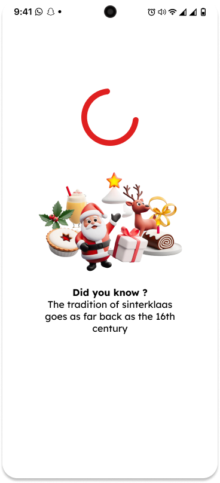
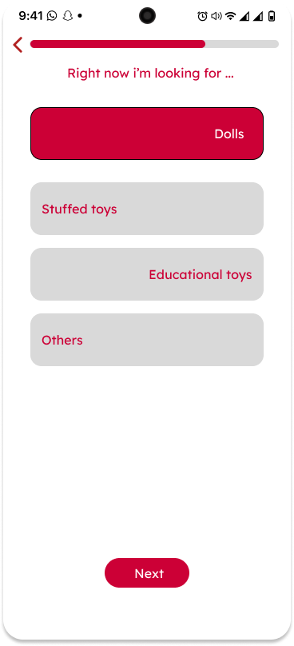
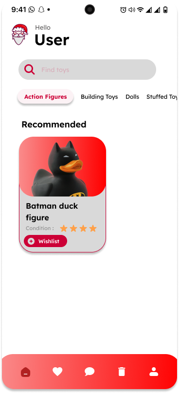
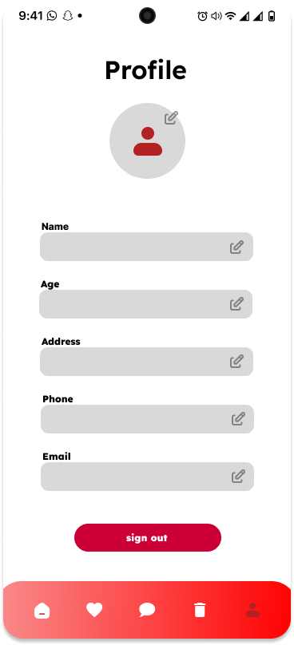

WISH 'N TOSS
A TOY EXCHANGE APP FOR USED TOYS
Roles & Tools Used
USER INTF.
Designed a smooth functional user centric interface
MOBILE DEV
Coded and created a working application
USER EXP.
Mapped out user journeys, scenarios, built around them



ABOUT PROJECT
FloryBele is an app designed to help students care for their plants with ease.
It provides detailed insights into their plants' specific needs, helping them
keep their greenery alive and thriving.
Users can scan their plants with their phone's camera, and the app will offer
detailed guidance on moisture requirements, sunlight exposure, soil quality,
and optimal room temperature.


MAIN PROBLEM
FloryBele is an app designed to help students care for their plants with ease.
It provides detailed insights into their plants' specific needs, helping them
keep their greenery alive and thriving.
Users can scan their plants with their phone's camera, and the app will offer
detailed guidance on moisture requirements, sunlight exposure, soil quality,
and optimal room temperature.
END RESULTS
FloryBele is an app designed to help students care for their plants with ease.
It provides detailed insights into their plants' specific needs, helping them
keep their greenery alive and thriving.
Users can scan their plants with their phone's camera, and the app will offer
detailed guidance on moisture requirements, sunlight exposure, soil quality,
and optimal room temperature.